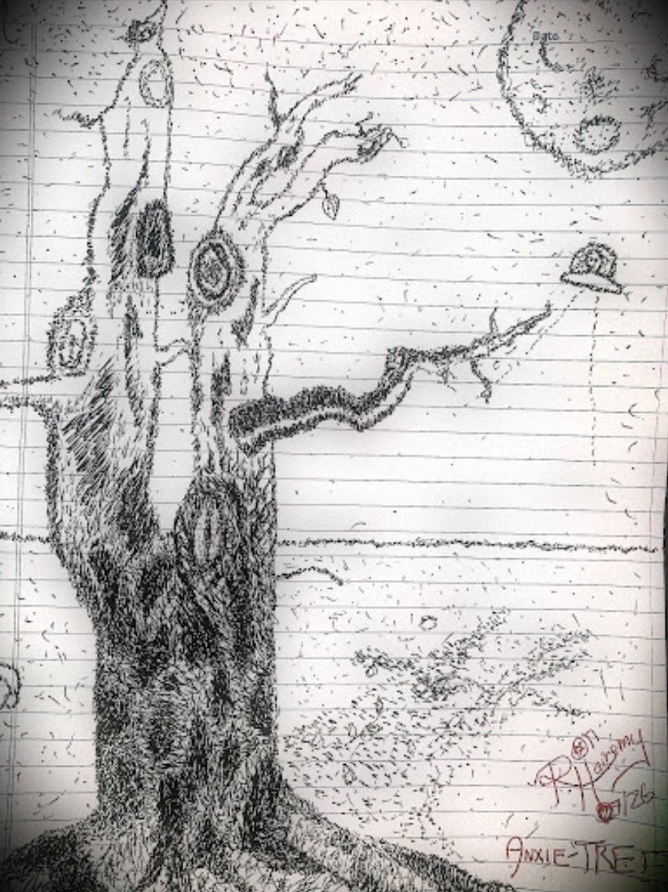
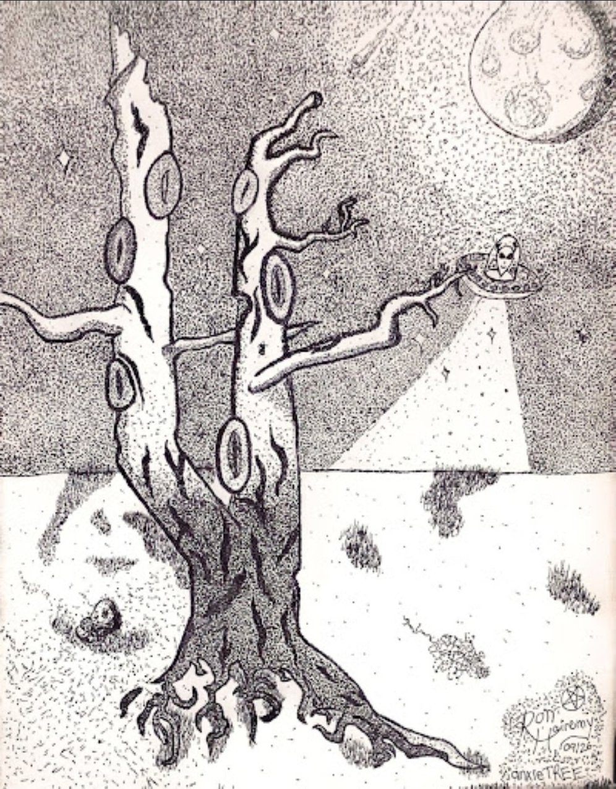
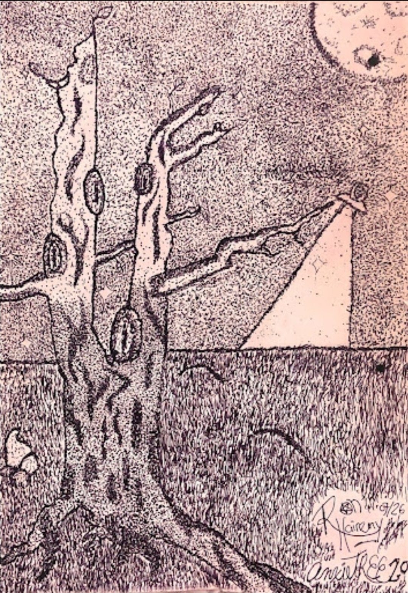

anxieTREE: The Series
One tree, drawn across three hard seasons, plus the finished canvas. Every version is ink and dots, and every version is a record of where Kaitiaki was when he drew it.

anxie-TREE v1
Pointillism, ink on paper. Drawn on the way to addictions counselling in Edmonton, half of it while walking.

anxieTREE v2
Pointillism, ink on paper. Made during relapses, guilt, and shame.

anxieTREE 2.0
Pointillism, ink on paper. The full-canvas realization, around 125 hours across all three versions.

anxieTREE 3.0
Pointillism, ink on canvas, 18 by 24 inches. The finished canvas. Sold at a silent auction at the memorial show for Cristopher Ryan, AKA Oddiologist, in September 2026, to help his family with funeral costs.
The full history, version by version, is told on the anxieTREE story page.